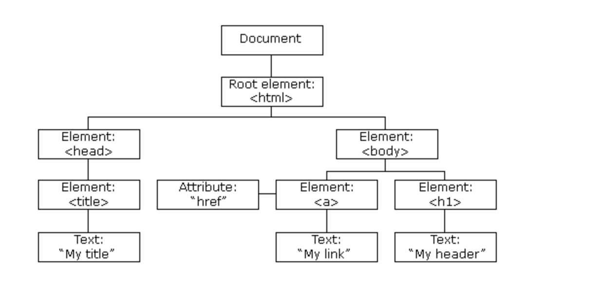

POSTS
Dom操作简介
DOM简介
Document Object Model (DOM) 为文档对象模型， 它使用对象的表示方式来表示对应的文档结构及其中的内容。
DOM的结构可以表示成树形结构

通过使用 DOM 提供的 API (Application Program Interface) 可以动态的修改节点（node），也就是对 DOM 树的直接操作。 浏览器中通过使用 JavaScript 来实现对于 DOM 树的改动。
如何用JavaScript获取HTML中的节点
通过标签的一些属性来获取
document.getElementById('id') document.getElementsByclassName('class')[0] document.getElementsByTagName('div')[0] //获取多个节点时 所返回的是伪数组，因此要得到真正的节点需要具体指定通过CSS选择器来获取
document.querySelector('#id') document.querySelectorAll('.class')[0] //获取多个节点时 所返回的是伪数组，因此要得到真正的节点需要具体指定
这么多方法我该如何选择？
如果不需要兼容IE直接使用2中的方法，要兼容IE就选择1中的方法
用JavaScript获取特定元素
获取HTML元素
document.documentElement获取head元素
document.head获取body元素
document.body获取窗口(窗口不是元素)
window获取所有元素
document.alldocument.all是继五大falsy值之后的第6个falsy值
节点的增删改查
节点的创建
创建标签节点
let div = document.createElement('div') document.createElement('style') document.createElement('script')创建的标签节点默认存储在Js线程中，如果想要让他在HTML中出现，比如插入到head或body中
1. document.body.appendChild(div) 2. (已存在页面中的元素).appendChild(div)创建文本节点
let text = document.createTextNode('Hello')把节点插入到文本中的方法
1. div.appendChild(text1) 2. div.innerText = 'Hello' 或 div.textContent = 'Hello'div.appendChild(‘Hello’)是绝对不可以的
删除节点
删除节点有两种方法可以实现
1. parentNode.removeChild('childNode') 2. childNode.remove()删除只是让节点从DOM树中消失，并不是真正的删除节点
修改节点内容
修改节点标准属性
改class
div.className = 'red blue' //这种方式会覆盖之前已有的类名 div.classList.add('red') //这种方式不会覆盖之前已有的类名改style
div.style = "width:100px;color:red" //这种方式会覆盖已有的style div.style.width = '100px' div.backgroundColor = 'red'
读取属性值
直接读取属性
div.style a.href用属性读取
div.getAttribute('class') a.getAttribute('href')
修改事件处理函数
div.onclick默认为null，如果把div.onclick改为一个函数fn，那么在div被点击的时候就会调用fn这个函数
调用方式：fn.call(div,event)
div就是this,event包含了这个事件的所有信息
test.onclick = function(e){ console.log(this) console.log(e) } test.onclick.call(test,event)修改内容
修改文本内容
div.innerText = 'hi' div.textContent = 'hi'修改HTML内容
div.innerHTML = '<strong>123</strong>'修改标签
div.innerHTML = '' div.appendChild('div2')修改爸爸
newParent.appendChild(div) //div会在原来的位置自动消失
查找节点
查爸爸
node.parentNode node.parentElement查爷爷
node.parentNode.ParentNode查子代
node.ChildNode //这种方法除了子节点之外会包括文本节点 node.Children //这种方法不会包括文本节点查兄弟姐妹
node.parentNode.children //还要排除自己 node.parentNode.childNode //还有排除自己和文本节点查老大/老幺
node.firstChild //查老大 node.lastChild //查老幺查上一个/下一个
node.previousSibling node.nextSibling
遍历div内的所有节点
let travel = (node,fn)=>{
fn(node)
if(node.children){
for(let i=0;i<node.children.length;i++){
travel(node.children[i],fn)
}
}
}
travel(div,(node)=>{console.log(node)})
节点和元素的区别
节点包括以下几种:
用x.nodeType可以获取到节点的类型
1表示元素Element，也叫做标签Tag
3表示文本Text
8表示注释Comment
···
一般情况下只需要记住1和3就足够